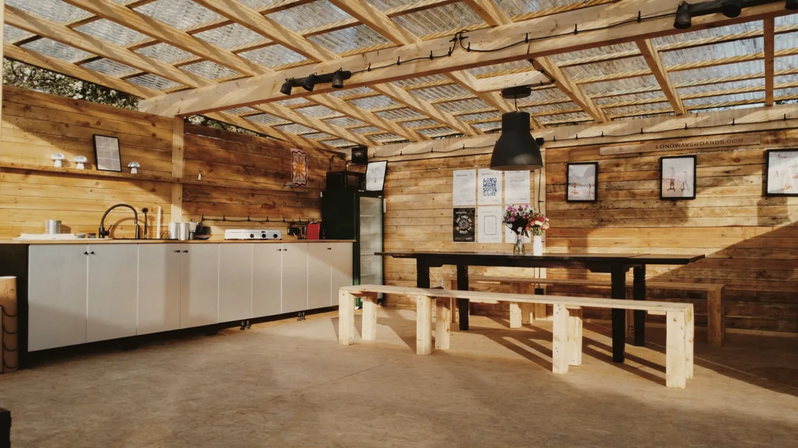
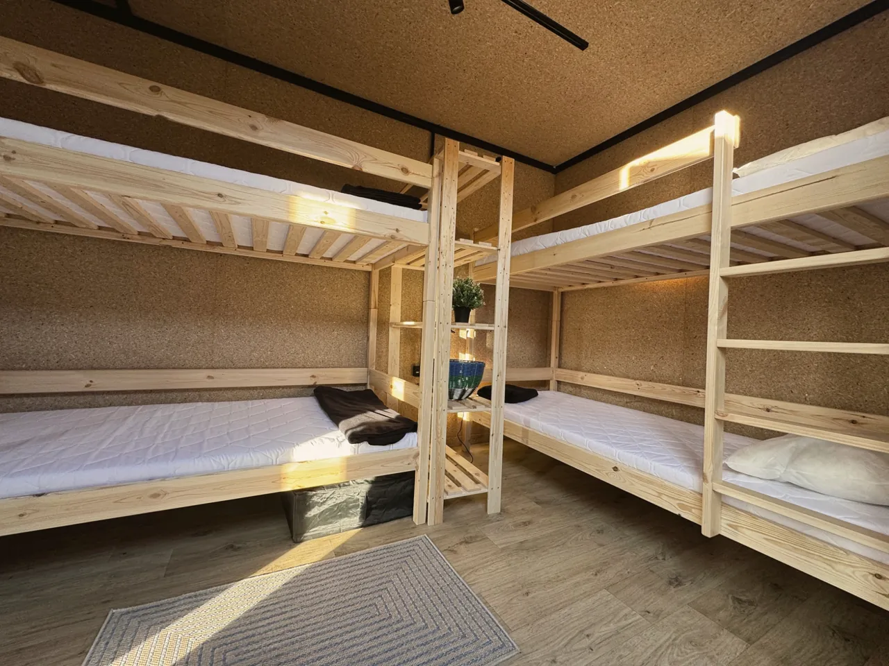

Molo Surf · Półwysep Helski
Home Spot Jastarnia
Domki w rytmie kempingu.
Domki w rytmie kempingu.
Home Spot powstał z potrzeby stworzenia miejsca, do którego chce się wracać. To nasza baza na Półwyspie Helskim, zaprojektowana z myślą o społeczności, aktywnym wypoczynku i prostym, dopracowanym komforcie. Tu można rozpocząć dzień od kawy, ruszyć na wodę lub rower i zakończyć go w dobrym towarzystwie.
Co znajdziesz na miejscu
- Cztery domki z lustrzanym frontem
- Tiny house
- Wspólna kuchnia i strefa wypoczynku
Na terenie kempingu Molo Surf w Jastarni czekają kameralne domki i wspólna strefa, która sprzyja spotkaniom. To miejsce dla rodzin, grup, osób aktywnych, rowerzystów i tych, którzy chcą połączyć pracę zdalną z wypoczynkiem blisko natury.
Jastarnia · Domki i wspólna przestrzeń
Rozgość się w Home Spocie.
Szczegóły zakwaterowania i dostępne warianty pobytu sprawdź w opisie wybranego terminu.



Czy w domku jest prywatna kuchnia?
Goście korzystają ze wspólnej kuchni.
Jaki charakter ma obiekt?
Domki działają na kempingu Molo Surf w Jastarni. W ciągu dnia mogą być słyszalne aktywności gości.
Zaplanuj pobyt
Sprawdź warunki pobytu bezpośrednio u Longwave.